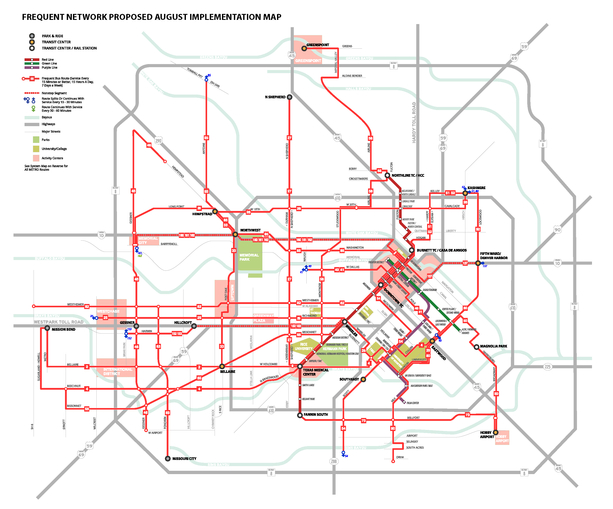
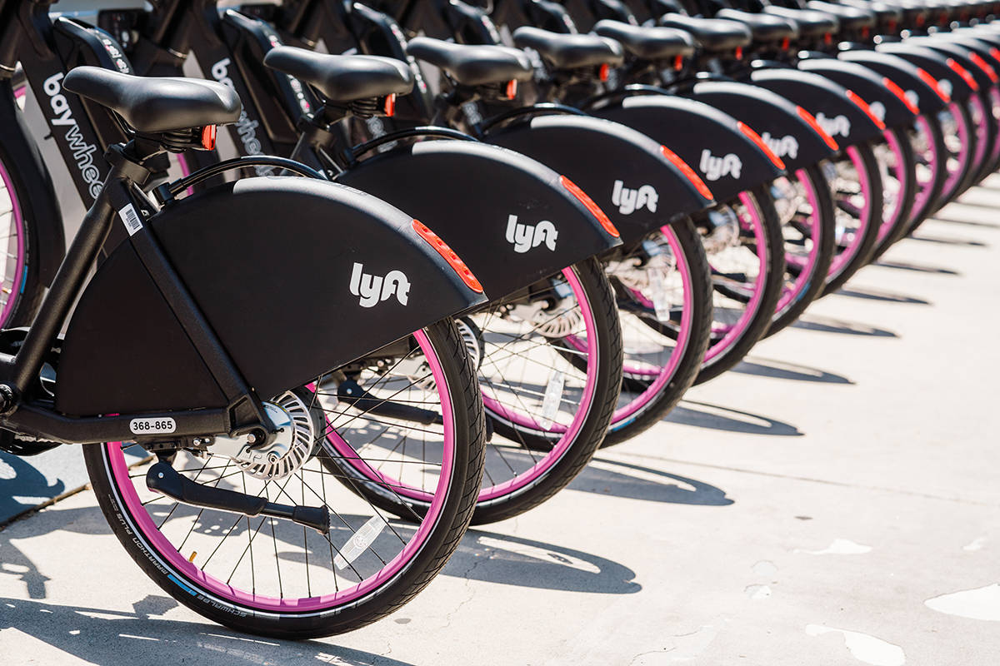
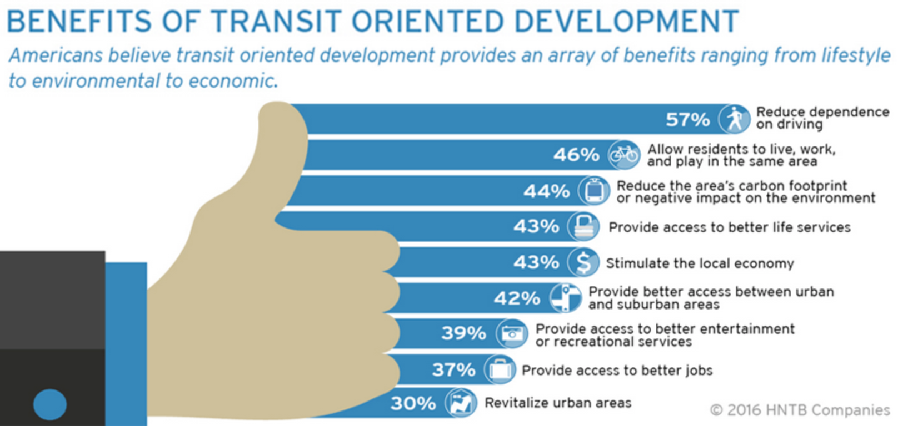
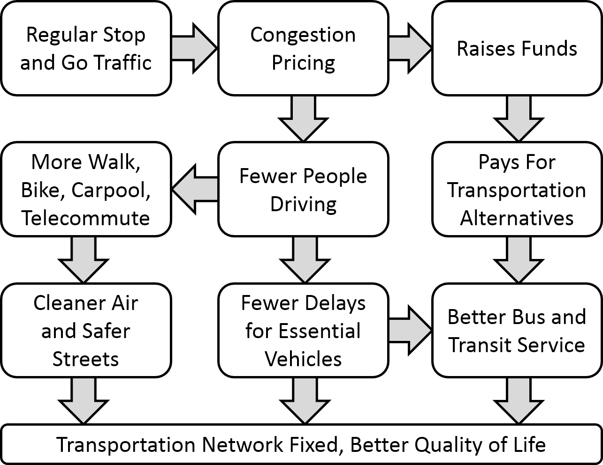
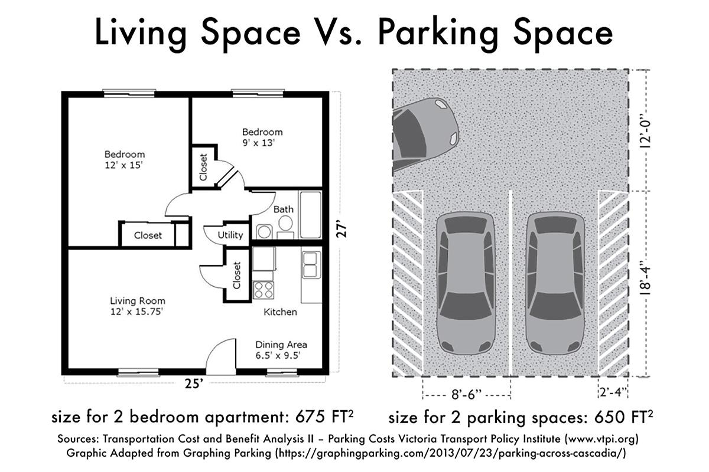

3.5 Vehicle Miles Traveled
This domain includes transportation-oriented strategies that lead to fewer vehicle miles traveled, such as public transit improvements, transportation demand management, and carpooling incentives. Electrification of vehicles is considered as a separate domain. Land use strategies that reduce sprawl are also part of this domain.
3.5.1 Create local transportation demand management ordinances

Source: Mobility Lab
| Location | Pasadena, CA |
|---|---|
| Details | Transportation Demand Management can include a variety of ordinances designed to reduce traffic congestion, increase safety and mobility, and conserve energy and reducing greenhouse gases. The Pasadena TDM focuses on encouraging alternative modes of transportation, such as transit, vanpools, carpools, and bicycles, as well as encouraging alternative work hours to reduce typical peak period demands upon the roadway network. The Trip Reduction Ordinance requires preferential parking spaces for carpool vehicles, providing employees with commuter-matching services and trip reduction information, and providing bicycle parking facilities and/or other non-auto enhancements. |
| Links | LA Metro |
| Implementation Costs & Impact Factor | Besides legislative work, no implementation costs. In 2014, 40 projects were subject to the City of Cambridge’s Parking and TDM Ordinance Large Project TDM Plans. Of those, 35 projects, or 88 percent completed monitoring reports. Of the 35 projects, 30 projects exceeded non-drive-alone mode split commitments. Read more here (Table 3-3). |
| Scalable Potential | Because Stockton has a low jobs to employed residents ratio, TDM is a less impactful strategy without the support of big employers of Stockton residents outside of the city. |
| Similar | Downtown Berkeley Parking and Transportation Demand Management SF Planning |
3.5.2 Redesign bus network to prioritize ridership over coverage

Source: NACTO
| Location | Houston, TX |
|---|---|
| Details | After an extensive community engagement process, the METRO Board of Directors directed the System Reimagining team to design a network where 80% of resources are aimed at maximum ridership and 20% of resources are used for coverage (compared to about 50%-50% today). The result is a simpler, easier to understand network that better aligns with the Houston of today. At all times, the plan strives to keep service to as many existing riders as possible. |
| Links | Houston METRO Transit Systems Reimagining Project |
| Implementation Costs & Impact Factor | The draft plan presented here is a no-growth network plan, which means it is designed to use existing METRO operating funds. The plan reallocates existing service rather than imagining new resources. That’s why the plan doesn’t always offer as much service as METRO or its customers would like. Nearly all (94%) current riders will be able to access service at the same stop they do now. The vast majority of current riders (72% up from 49.5% on weekdays and 25% on weekends) will be on or near frequent service that is useful for travel to more places than they can reach easily now. Even if you are already on a frequent line, the plan makes it much easier to transfer to other lines to get to more places. 99.5% of existing riders will have local bus service within 1/4 mile. The small percentage that will be farther from service either live or travel in areas where the pattern of development and the street network make it impossible to run transit efficiently, and as a result they could only be served at a very high cost per rider. About 0.6% of existing riders will have flexible service rather than fixed route service. This service will provide hourly pickups and dropoffs within its defined zone and to reach a point where you can connect to fixed route service. Riders can call ahead to reserve a ride on the service or meet the bus at a designated location and time. Some fixed routes will still run in these zones, but the flexible service will fill in the gaps for those who might find it difficult to walk to a bus stop. |
| Scalable Potential | San Joaquin RTD is still recovering from budget cuts, but can consider a bus network redesign that is budget-neutral and maximizes ridership. |
| Similar | IndyGo Austin Capital Metro Connections 2025 Central Ohio Transit Authority |
3.5.3 Use BRT corridors to reduce travel times on public transit

RTD 2018 Short Range Transit Plan. Source: SJRTD
| Location | San Francisco, CA |
|---|---|
| Details | Bus rapid transit is a system that allocates designated lanes to buses and light rail, in order to make for faster travel on bus. Additionally, off-board fare collection is key to reduce delay caused by passengers waiting to pay on board. |
| Links | San Francisco Van Ness Improvement Project Institute for Transportation & Development Policy |
| Implementation Costs & Impact Factor | RTD has planned for about $30 million of BRT service expansion between 2019-2026. When fully deployed, RTD’s BRT routes will create a high-frequency network covering the major arterials of the County, connecting them with central Stockton. RTD projects almost 3.7 million annual trips on the BRT network by FY 25. By attracting new riders, RTD’s BRT network can eliminate over one million tons of carbon emissions. |
| Scalable Potential | BRT service is currently planned for a range of corridors throughout the City of Stockton, with potential service extension to Lodi via BRT Express. RTD will implement BRT Express service over time as funding becomes available and as demand grows due to new development. Therefore, BRT design may differ by corridor but should follow a set of requirements to ensure system characteristics remain consistent. |
| Similar | Bogota TransMilenio, Mexico City Metrobus, Johannesburg BRT |
3.5.4 Promote the use of e-scooters and dockless bicycles to reduce reliance on private cars

Source: SF Examiner
| Location | San Francisco, CA |
|---|---|
| Details | Shared scooters and bikes, which can be used in dedicated bike lanes, have already become a major source of transportation in large metropolitan areas. Bird had 10 million rides in its first 12 months alone, while Lime users took 34 million trips in its first year. Additionally, they are more conducive to the short trips made by most commuters. |
| Links | Deloitte Insights |
| Implementation Costs & Impact Factor | Costs average at $100 per scooter. Impact depends on where the city gets its energy from e.g. coal, natural gas, or renewable. The majority of scooter trips are less than 2 miles, which may mean that they are not a substitute for ride apps. They do, however, serve to reduce traffic congestion as 60% of car trips fell within the micromobility range of 0-5 miles. |
| Scalable Potential | Stockton’s urban core may not yet experience the congestion issues that create an opportunity for micromobility. |
| Similar | Pittsburgh Mobility Collective Tacoma, WA Washington, DC |
3.5.5 Rezone areas around transit stations and commercial corridors to allow for high-density residential development

Source: TOD Institute
| Location | Tyson, VA |
|---|---|
| Details | This plan increased the permissible floor area ratio from 2.0 to 5.0 while also providing incentives to reserve 20% of new residential units for affordable and workforce housing (residents earning between 50% and 120% of area median income). City officials hope that this will also help to facilitate the use of public transit due to close proximity to stations. |
| Links | Tyson Comprehensive Land Use Plan |
| Implementation Costs & Impact Factor | Besides legislative work, no implementation costs. Planned to attract 80,000 new residents and 200,000 jobs. |
| Scalable Potential | Stockton recently updated its General Plan, Envision Stockton 2040, but the next cycle is likely to begin in 2021. |
| Similar | Minneapolis 2040 |
3.5.6 Offset negative externalities of traffic through tolls

Source: Wikipedia
| Location | New York City, NY |
|---|---|
| Details | New York placed tolls in two locations that are typically congested. 80% of the funds from tolling will go to capital projects while 20% goes towards the public transit system. Drivers can only be tolled once per day. Additionally, toll exemptions are made for emergency vehicles, drivers with disabilities, and those who make under $60,000 per year. The goal of the program is to reduce congestion by encouraging the use of carpooling and public transit. |
| Links | NY Times |
| Implementation Costs & Impact Factor | Mayor Bloomberg’s 2008 proposal, based on an $8 charge for entering Manhattan south of 86th Street, place dannual revenue from the charge at roughly $400 million in the first year and up to $900 million by 2030. When a congestion charge is implemented, a small but significant number of motorists alter the time of their commute to avoid the charge, or adopt a more efficient means of transportation such as walking, bicycling or mass transit. This relatively small decrease in traffic leads to an enormous reduction in delays and congestion. Mayor Bloomberg’s proposal anticipated a 6.5% reduction in the number of vehicles entering Manhattan south of 86th Street, and an even more dramatic during peak hours when an 11% traffic reduction would result in a 20-40% reduction in time loss to traffic delays. |
| Scalable Potential | Because Stockton is not currently a concentrated job center, congestion on local roads is not a significant issue. |
| Similar | Seattle Department of Transportation Stockholm, Sweden |
3.5.7 Charge for parking

Source: Denver Urbanism
| Location | New York City, NY |
|---|---|
| Details | Cities that charge for parking have realized an increase in the use of public transit for commuting (r-squared of .83) and a reduction in commuting alone. This is made more effective when they eliminate zoning requirements about parking and change the cost of parking over the day. In New York, sensors have allowed the tracking of parking spaces, bringing vehicles directly to open parking spaces, rather than having them drive around looking for a spot. |
| Links | What the Price of Parking Shows Us About Cities |
| Implementation Costs & Impact Factor | Over the course of the SFpark pilot project, the SFMTA lowered the average hourly rate at meters by 11 cents from $2.69 to $2.58 and average hourly rates at SFpark garages by 42 cents from $3.45 to $3.03. The amount of time that spots achieved the target parking occupancy (60 to 80 percent) increased by 31 percent in pilot areas, compared to a 6 percent increase in control areas. Read more here. |
| Scalable Potential | Because Stockton is not currently a concentrated job center, parking congestion is not a significant issue. However, demand-response parking pricing can be explored in Downtown. |
| Similar | SFpark |
3.5.8 Give carpoolers priority parking at transit stops

Source: News Tribune
| Location | King County, WA |
|---|---|
| Details | At all light rail stations, commuters who drive together are able to park for free at Sound Transit priority parking. Drivers must arrive with at least two other riders to be eligible and half the spaces at each parking location are dedicated to carpoolers. |
| Links | Carpoolers will get edge for Sound Transit parking – for a price |
| Implementation Costs & Impact Factor | 5 Year Budget, including permitting, towing, and administration of program with outside vendor, costs $3 million. No evaluation results could be found. |
| Scalable Potential | Contingent upon RTD use. Carpooling incentives can be targeted towards commuters to transit-accessible destinations. |
| Similar | Stanford Commute Club Portland Carpool Program |
3.5.9 Ban personal vehicles from certain areas

Source: SFMTA
| Location | Madrid, Spain |
|---|---|
| Details | Madrid 360 has made 472 hectares of the city center off-limits to traffic, except for local residents and public transit. Non-residents with appropriate labels may enter to leave their vehicle in a public parking lot, and exceptions are made for people with reduced mobility, ambulances, taxis, private-hire cars, and delivery vans. Electric vehicles will also be allowed into the city center. |
| Links | Madrid takes historic step to becoming a car-free city center |
| Implementation Costs & Impact Factor | Pedestrian space has increased by nearly 22,000 square meters. It has cut traffic by 32 percent in some areas. Those who violated the ban were fined $100. |
| Scalable Potential | Anecdotally, many of the cities that have implemented car bans seem to have greater pedestrian traffic and less sprawl/more centralized downtown. Stockton does not yet have a vibrant pedestrian downtown core that would merit this strategy. |
| Similar | Better Market Street SF Paris, France |
3.5.10 Encourage carsharing strategies

Source: SF Environment
| Location | San Francisco Bay Area, CA |
|---|---|
| Details | On June 13, 2018 the Metropolitan Transportation Commission (MTC, the Bay Area’s transportation planning, financing, and coordinating agency) allocated $1.2 million under the Climate Initiatives Program to implement the strategies recommended in the attached report; “Bay Area Carsharing Implementation Strategy”, completed in Spring 2018. The Carsharing Implementation Strategy documents were outlined in a report to MTC’s Board which reviews the development and current state of carsharing in the Bay Area, explores regional challenges and opportunities as they apply to various carsharing business models (round-trip, one-way, and peer-to-peer), presents findings from interviews and workshops with stakeholders in the region, and provides specific strategies to support the expansion of carsharing. The Carsharing Strategy is intended to identify opportunities to grow carsharing membership and usage in the Bay Area as a method of reducing single-occupancy vehicle trips and vehicles miles traveled, with the overall goal of reducing greenhouse gases. |
| Links | Bay Area Carsharing Implementation Strategy |
| Implementation Costs & Impact Factor | This plan will be integrated with relevant local transit authorities e.g. BART, Caltrain, Muni, et cetera. As such, payment kiosks will be located at respective centers. See Table 1 in MTC report. |
| Scalable Potential | Stockton’s intra-county workforce has declined from 92.4% in 1980 to 83.1% in 2010. This means that people are traveling longer to get to work, suggesting greater benefits to such a program. |
| Similar | Boston Fleethub |
3.5.11 Provide free public transit

Source: Curbed
| Location | Kansas City, MO |
|---|---|
| Details | Kansas City, Missouri, will be the first major US city to offer free bus service to residents by 2020. City Council members in a metropolis of about 490,000 people, voted unanimously in early December 2019. The council still needs to decide how the system will be funded and where that money will come from in the budget. |
| Links | Vox |
| Implementation Costs & Impact Factor | The Kansas City Council already expects to spend about $8 to $9 million to cover for the lost fares, as mentioned, but the city already loses $1.5 million collecting fares every year, according to Mayor Lucas. The impact on ridership is yet to be determined. |
| Scalable Potential | Free transit could be feasible in Stockton given the relatively low transit ridership numbers for RTD compared to high-density cities. It’s unclear how the loss in revenues would affect service quality and ridership. In Dunkirk, France, a similar program was implemented with the following results: Passengers were up 50-85%, depending on the route, and Aaverage trip length dropped by 10%. |
| Similar | Luxembourg Estonia |
3.5.12 Subsidize first-mile/last-mile transportation services

Source: Shared-Use Mobility Center
| Location | Centennial, CO |
|---|---|
| Details | The First and Last Mile Pilot (FLMP) was a public-private partnership between the City of Centennial, CH2M, the Denver South Transportation Management Association (DSTMA), Southeast Public Improvement Metropolitan District (SPIMD), Lyft, Via Mobility Services (Via), and Xerox (Conduent). Beginning August 17th, residents were able to request a free Lyft Line (carpooling) ride to and from the Dry Creek LRT station. The Go Denver app powered by Xerox integrated scheduling and payment systems for both transit and Lyft, thus allowing users to select the FLMP options including “Light Rail + Lyft Line.” |
| Links | Shared Use Mobility Center |
| Implementation Costs & Impact Factor | The FLMP program had a budget of $400,000 and temporarily replaced the City’s Call-n-Ride system. Read more in the report. |
| Scalable Potential | A similar service in Stockton could subsidize trips to the Amtrak station or dowtown bus station. |
| Similar | RideAustin |